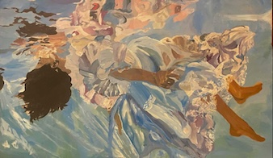

Creative Writing
I am a published writer with work appearing in TCU's Journal of the Arts, eleven40seven. My poem, A Day in El Puerto, has been recognized with two awards, highlighting my ability to craft compelling narratives and experiment with language in ways that resonate with readers. Beyond poetry, I also write short stories and creative nonfiction, using writing as both a personal passion and a means of exploring culture, identity, and human connection.
Skills used: Creative Writing, Editing, Storytelling, Critical Thinking